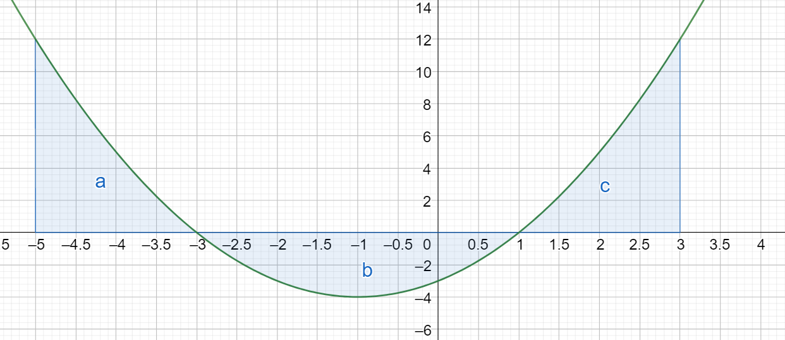

Määrätty integraali
Määrätty integraali#
Määrätty integraali on sovellustehtävissä hyödyllinen käsite. Määrätyn integraalin laskemiseen valitaan tarvitaan ensin funktion \(f(x)\) integraalifunktio \(F(x)\). Sitten valitaan kaksi pistettä \(x_1\) ja \(x_2\). Lasketaan integraalifunktion arvot näissä pisteissä, siis \(F(x_1)\) ja \(F(x_2)\). Lopuksi lasketaan näiden arvojen erotus: \(F(x_2)-F(x_1)\). Määrätyn integraalin laskemisesta tuloksena on siis luku, ei lauseke.
Määrättyä integraalia laskettaessa voidaan aina asettaa integroimisvakioksi \(C=0\). Näin voidaan tehdä, koska erotusta \(F(x_2)-F(x_1)\) laskettaessa vakio kuitenkin sievenee pois.
Määrättyä integraalia merkitään seuraavasti: funktion \(f(x)\) määrätty integraali pisteestä \(x_1\) pisteeseen \(x_2\) on \(\int_{x_1}^{x_2} f(x) ~\text{d}x\).
Lisäksi käytetään seuraavaa merkintää: \(\overset{x_2}{\underset{x_1}{/}} F(x) = F(x_2) - F(x_1)\).
Huomautus
Määrätty integraali määritellään ns. Riemann-summan avulla seuraavasti:
\(\lim_{n \to \infty} \Sigma_{i=1}^n f(x_i) \Delta x\)
Laskukaavan perustelu päivitetään tänne myöhemmin!
Esimerkki
Laske määrätyt integraalit:
a) \(\int_0^3 x+6~\text{d}x\),
b) \(\int_{2}^5 x^2+3~\text{d}x\).
Ratkaisu
a)
\(\begin{align} & \int_0^3 x+6~\text{d}x = \overset{3}{\underset{0}{/}} \frac{1}{2}x^2+6x \\ & = (\frac{1}{2}\cdot 3^2+6\cdot 3)- (\frac{1}{2}\cdot 0^2+6\cdot 0)\\ & = (\frac{9}{2}+18)-(0+0)=22.5 \end{align}\)
b)
\(\begin{align} & \int_2^5 x^2+3~\text{d}x = \overset{5}{\underset{2}{/}} \frac{1}{3}x^3+3x \\ & = (\frac{1}{3}\cdot 5^3+3\cdot 5)- (\frac{1}{3}\cdot 2^3+3\cdot 2) = \\ & = \left(\frac{25}{3}+15\right)-(\frac{8}{3}+6)=\frac{144}{3}=48 \end{align}\)
Määrätyn integraalin voi tulkita funktion \(f(x)\) kuvaajan ja \(x\)-akselin väliin jäävän alueen pinta-alaksi, kun aluetta rajoitetaan pisteiseen \(x_1\) ja \(x_2\) asetetuilla suorilla. Jos funktion arvot ovat negatiivisia eli jos funktion kuvaaja kulkee \(x\)-akselin alapuolella, niin pinta-ala on määrätyn integraalin itseisarvo.
Lisäksi määrätyn integraalin voi tarvittaessa laskea palasina: pisteiden \(x_1\) ja \(x_2\) välistä voidaan valita mikä tahansa piste \(x_3\), ja tällöin
\(\int_{x_1}^{x_2} f(x)~\text{d}x = \int_{x_1}^{x_3} f(x)~\text{d}x + \int_{x_3}^{x_2} f(x)~\text{d}x\).

Esimerkki
Edellisessä kuvassa on funktion \(f(x)=x^2+2x-3\) kuvaaja. Funktiolla on nollakohdat \(x=-3\) ja \(x=1\). Laske funktion kuvaajan ja \(x-\) akselin väliin suorien \(x=-5\) ja \(x=3\) rajaama pinta-ala kolmessa osassa (kuvaan merkityt alueet \(a\), \(b\) ja \(c\)).
Ratkaisu
\(\int_{-5}^3 f(x)~\text{d}x = \int_{-5}^{-3} f(x)~\text{d}x + |\int_{-3}^1 f(x)~\text{d}x| +\int_1^3 f(x)~\text{d}x\)
Keskimmäisestä integraalista on laskettava itseisarvo, sillä funktion arvot ovat negatiivisia välillä \(-3 \leq x \leq 1\).
Funktion \(f(x)=x^2+2x-3\) integraalifunktio (jossa \(C=0\)) on \(F(x)=\frac{1}{3}x^3+x^2-3x\).
Alueen \(a\) pinta-ala on:
\(\begin{align} & F(-3)-F(-5) \\ & =\frac{1}{3}\cdot (-3)^3+(-3)^2-3\cdot(-3) - \left(\frac{1}{3}\cdot (-5)^3+(-5)^2-3\cdot(-5)\right)\\ & =\frac{32}{3} \end{align}\)
Alueen \(b\) pinta-ala on:
\(\begin{align} &\left|F(1)-F(-3)\right| \\ &=\left|\frac{1}{3}\cdot 1^3+1^2-3\cdot1 - \left(\frac{1}{3}\cdot (-3)^3+(-3)^2-3\cdot(-3)\right)\right|\\ &=\left|-\frac{32}{3}\right|=\frac{32}{3} \end{align}\)
Alueen \(c\) pinta-ala on:
\(\begin{align} & F(3)-F(1) \\ & = \frac{1}{3}\cdot 3^3+3^2-3\cdot 3 - \left(\frac{1}{3}\cdot 1^3+1^2-3\cdot 1\right) \\ & = \frac{32}{3} \end{align}\)
Yhteensä pinta-ala on siis \(3\cdot \frac{32}{3}=32\).
Esimerkki
Fysiikassa sijainti hetkellä \(t\), siis \(x(t)\), on nopeuden \(v(t)\) integraalifunktio. Kappale liikkuu hetkellä \(t\) nopeudella \(v(t)=3t\). Kuinka kauas lähtöpisteestä kappale etenee
a) välillä 0…1 sekuntia?
b) välillä 9…10 sekuntia?
c) välillä 0…10 sekuntia?
Ratkaisu
Funktion \(v(t)=3t\) integraalifunktio on \(x(t)=\int 3t~\text{d}t=\frac{3}{2}t^2\). Lasketaan tehtävänannon mukaiset määrätyt integraalit:
a) \(\int_0^1 3t~\text{d}t= x(1)-x(0)=\frac{3}{2}\cdot 1^2 - \frac{3}{2}\cdot 0^2 = \frac{3}{2}\)
b) \(\int_9^{10} 3t~\text{d}t= x(10)-x(9)=\frac{3}{2}\cdot 10^2 - \frac{3}{2}\cdot 9^2 = \frac{3}{2} (10^2-9^2) = \frac{3}{2}\cdot 19 = \frac{57}{2}\)
c) \(\int_0^{10} 3t~\text{d}t= x(10)-x(0)=\frac{3}{2}\cdot 10^2 - \frac{3}{2}\cdot 0^2 = \frac{300}{2}=150\)